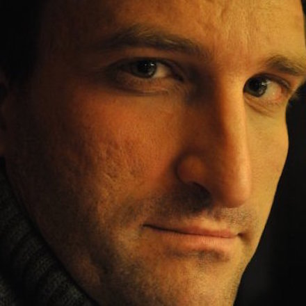
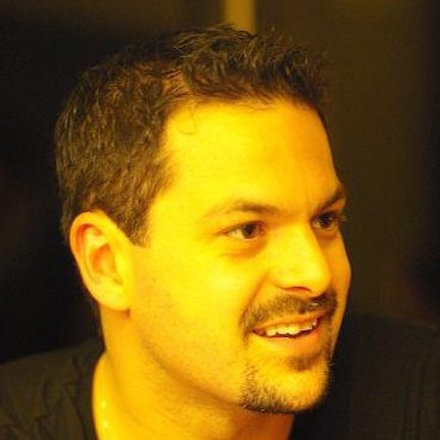
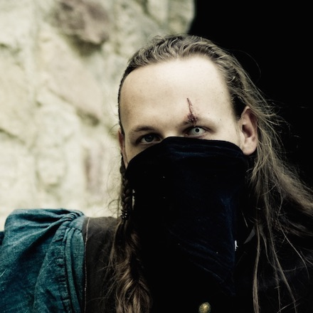
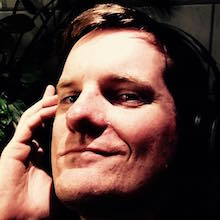
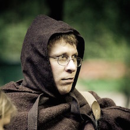
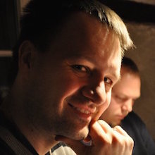

Unser Team







Unsere Cons spielen im Jetland mit seiner Hauptstadt Dreywassern, aus der auch unsere Intime-Charaktere stammen. Das Jetland gehört nicht zu einem der vielen Landstriche in den Mittellanden, sondern stellt mit seinen angrenzenden Gefilden eine eigenständige Region mit verschiedensten Kulturen und einer eigenen Götterwelt dar. Ein paar erste Eindrücke erhältst du auf unserer Vereins-Homepage http://www.dreywassern.de.
Da wir bei unseren eigenen Charakteren viel Wert auf schönes Spiel und Spaß legen, verlangen wir von anderen nichts anderes. Bei der Charaktererschaffungen nutzen wir zwar das Regelwerk DragonSys 2nd Edition als Richtlinie, halten aber nicht verbissen daran fest. Es ist uns wichtiger, dass das Drumherum stimmt, als dass auf jeden Erfahrungspunkt geschaut wird. Selbstverständlich setzen auch wir Grenzen: Eigenschaften, die uns zu übermächtig oder nicht darstellbar erscheinen, streichen wir. Auf "Powergamer" können wir sehr gut verzichten!
Unsere Plots bieten für jeden etwas: vom Kämpfer über Waldläufer, Schurken und Schamanen bis hin zu Magiern und Gelehrten ist für jeden Geschmack etwas dabei. Wir versuchen immer, auch unerfahrenen Charakteren eine Möglichkeit zu geben, sich an dem Spiel zu beteiligen. Stupide "Ich schlachte dich ab, du schlachtest mich ab"-Cons vermeiden wir, was aber nicht bedeutet, dass Charaktere nicht sterben können! Aus unserer Sicht hat ein gutes Con die richtige Mischung zwischen Ambiente und Plotjagd, zwischen Knobeleien und Kampf.
Als Orga versuchen wir stets, allen Beteiligten ein faszinierendes Con zu bieten. Monatelang tüfteln wir am Plot, gestalten Kostüme, konzipieren Aufbauten und entwerfen NSC-Rollen. Doch am Ende kommt es auf euch an und darauf, was ihr aus der Geschichte macht, die wir für euch erdacht haben. Wir haben auf unseren Cons erlebt, wie viel Freude und Leidenschaft die Spieler, die NSCs und das Team aus Orga und Helfern einbringen. Aus unserer Sicht ist es dieses Herzblut, das uns alle zusammenbringt.